Formularis
Un dels principals propòsits dels formularis és facilitar-vos la tasca d’introduir informació a les taules de la vostra base de dades. A més de ser un mitjà senzill i intuïtiu per introduir informació a la base de dades, els formularis tenen dues funcions destacables: modificar i visualitzar informació.
Sobretot aquesta última és fonamental quan les vostres taules comencen a tenir un volum raonable, ja que també inclouen funcions de filtratge o cerca similars a les aplicades per a les taules.
Una utilització més avançada dels formularis permetrà introduir o modificar dades de diverses taules alhora, aprofitant les propietats que aporten les relacions entre taules.
Un formulari pot incloure textos, gràfics, quadres combinats i d’altres elements.
Assistent per crear formularis
En la majoria dels casos, el mètode més convenient per crear un nou formulari és utilitzar l’assistent al contrari que en el procés de la creació de taules.
Això no vol dir que l’assistent sigui l’única mitjà que podeu utilitzar per crear els formularis, però sí el més còmode.
El primer que heu de fer és col·locar-vos a la finestra principal de Base. A continuació, feu clic sobre l’objecte Formularis que apareix al panell de l’esquerra, tal com mostra la figura.
Els formularis s’utilitzen fonamentalment per introduir dades en taules. Cal que la base de dades que s’utilitza disposi de les taules necessàries.
Veureu que Base mostra dues noves opcions a la finestra de tasques:
- Crea un formulari en vista de disseny.
- Crea un formulari utilitzant l’auxiliar.
En aquest cas feu clic sobre Crea un formulari utilitzant l’auxiliar, tal com s’indica a la figura.
Immediatament, com podeu veure a la figura, apareix una finestra similar a Writer sota de l’assistent.
Veureu que l’assistent us presenta una finestra dividida en dues parts, tal com mostra la imatge figura:
- La part esquerra, mostra els 8 passos per fer el formulari.
- La part dreta, mostra les opcions que podreu emprar en funció del moment de la creació del formulari en què us trobeu.
L’assistent us anirà guiant pel procés de creació del formulari.
Primer pas
El primer que heu de fer és desplegar el quadre de llista Taules o consulta per seleccionar la taula o consulta que conté els camps que voleu utilitzar en el formulari, tal com mostra la imatge figura.
Els formularis es poden crear sobre les taules o sobre les consultes que contingui la base de dades.
Automàticament veureu que el quadre de llista Camps disponibles mostra tots els camps que conté la taula que heu seleccionat.
Indiqueu quins d’aquests camps apareixeran al formulari. Seleccioneu el camp que us interessi i feu clic sobre el botó que serveix per transferir el camp cap a la dreta (>). D’aquesta manera el camp seleccionat apareixerà en el quadre de llista Camps del formulari.
A la figura podeu veure una descripció del significat de cadascun dels botons que podeu trobar en el primer pas de l’assistent.
Un cop transferits tots els camps que utilitzareu en el formulari, dins el quadre de llista Camps del formulari, podeu establir l’ordre en què desitgeu que apareguin al formulari. Podeu modificar la posició dels camps, només heu de seleccionar-los i, utilitzant els botons Pujar un lloc o Baixar un lloc, podreu col·locar-los en la posició adequada.
Segon pas
Podeu incloure un subformulari al formulari principal sempre que les taules estiguin relacionades, tal com mostra la figura.
En deixar desactivada l’opció Afegeix un subformulari comproveu com els passos 3 i 4 apareixen atenuats, indicant que aquests passos s’obviaran si feu un formulari sense subformulari.
A la figura podeu veure les opcions que mostra aquest segon pas de l’assistent.
Com que no incloem cap subformulari, l’assistent passa automàticament al cinquè pas.
Cinquè pas
En aquest pas de l’assistent heu de triar la millor disposició dels camps dins el formulari. Tal com podeu veure, la figura us mostra, en la secció Disposició del formulari principal, diversos models predeterminats perquè seleccioneu el que més us interessi per al vostre formulari. Observareu que després de seleccionar-ne qualsevol canvia el formulari que teniu sota l’assistent mostrant la disposició escollida dels controls.
Si trieu la disposició En columnes també podreu col·locar els noms dels camps alineats a l’esquerra o a la dreta.
Sisè pas
Aquest pas permet triar la finalitat per a la qual es crea el formulari, tal com es mostra en la figura
Les possibilitats que us ofereix l’assistent són:
- El formulari s’ha d’utilitzar per introduir únicament dades noves: si voleu utilitzar el formulari únicament per omplir les dades d’una o més taules.
- No es mostraran les dades existents: el formulari mostrarà els camps buits i només hi podreu introduir noves dades. No podreu ni editar, ni modificar, ni tan sols veure les dades que ja són dins de la taula o taules.
- El formulari mostrarà totes les dades: permet veure les dades de la taula o taules amb les quals es treballa.
En seleccionar aquesta última opció també podeu indicar tot el que es podrà fer amb les dades que es mostren:
- No permetis la modificació de les dades existents: les dades es mostren en el formulari, però no es pot modificar el contingut de cap dels seus camps.
- No permetis la supressió de les dades existents: no permet que esborreu cap dels camps.
- No permetis l’addició de noves dades: si seleccioneu aquesta casella no podreu introduir noves dades a la taula o taules mitjançant el formulari.
De les tres caselles disponibles podeu seleccionar-ne una o diverses sumant amb això les accions que cadascuna indica.
Setè pas
Aquest nou pas està destinat a configurar l’aspecte formal del formulari, permetent, com podeu veure a la figura, configurar el color del fons i la forma de mostrar el requadre que conté les dades dels camps.
El quadre de llista Aplica els estils mostra els diferents colors que podeu utilitzar en el fons del formulari.
La secció Vora del camp ofereix les tres formes de mostrar el requadre de les dades dels camps:
- Sense vores: mostra simplement el requadre d’un altre color.
- Vista en 3D: mostra el requadre amb efecte tridimensional.
- Pla: mostra el requadre amb una línia en el contorn.
Vuitè pas
En aquest últim pas, tal com podem veure en la figura, només heu de posar el nom que assignareu al formulari i indicar si a continuació treballareu amb el formulari o el modificareu.
Després de posar-li nom, feu clic sobre el botó Fi i segons si heu marcat Treballa amb el formulari o Modifica el formulari passareu a la introducció de dades en el formulari o a l’edició del formulari.
Si heu decidit treballar amb el formulari veureu que el nou formulari creat, tal com mostra la figura, apareix davant de l’entorn de la vostra base de dades llest per començar a introduir dades o per navegar per les dades que ja teniu en les taules.
Entorn de disseny del formulari: barres i controls
L’entorn de disseny del formulari està integrat per dues parts diferenciades: el cos del formulari i les barres d’eines. A continuació es descriuen les diferents barres d’eines.
Barra de menús: amb menús similars als que mostra el processador de textos Writer, si bé és cert que hi ha algunes opcions específiques dels formularis (vegeu figura).
La barra d’eines estàndard: de la mateixa manera que els menús, conté els mateixos botons que observeu quan esteu escrivint qualsevol document en Writer, tal com mostra la imatge figura.
La barra d’eines de disseny: només està activa quan editeu un formulari o quan el creeu en mode disseny, vegeu la imatge figura.
A la taula taula hi teniu la funció de cadascuna de les seves icones.
| Icona | Funció |
|---|---|
| 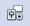 | Control: aquest botó s’activa en el moment en què es tingui seleccionat un control o objecte del formulari |
| 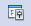 | Formulari: permet visualitzar les propietats del formulari |
 | Navegador: permet navegar pels diferents objectes incrustats al formulari |
| 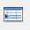 | Afegir camp: permet afegir un camp de la taula amb la que s’està treballant en aquest moment |
| 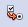 | Ordre d’activació: permet definir l’ordre per anar d’un camp a l’altre. També anomenat ordre de tabulació |
| Disseny activat/desactivat: permet canviar del mode disseny al mode edició |
La barra d’eines de navegació de formularis: és la barra que teniu activa quan treballeu amb les dades en un formulari i hi podeu trobar botons per desplaçar-vos pels diferents registres, botons per filtrar les dades del formulari, botons per ordenar els registres per diferents camps, etc., vegeu la imatge figura.
A continuació es detalla la funció de les diferents icones que conté la barra de navegació:
- Permet cercar un registre que ja existeixi en el formulari.
- És el registre que esteu visualitzant actualment a la pantalla del formulari.
- És el número de registres total de què disposeu al formulari o taula.
- Comandaments que permeten anar al primer o a l’últim registre o anar d’un en un.
- Permet afegir un registre nou. Si feu clic sobre aquest botó mostrarà el formulari amb tots els camps buits i el cursor intermitent en el primer perquè comenceu a introduir les dades d’un nou registre.
- Permet desar els registres o canvis realitzats en el formulari. Podeu usar-lo per desar les dades que s’han introduït en un registre nou o en un que estigueu modificant. Els registres també es desen automàticament quan premeu Retorn (Intro) estant en l’últim camp del formulari.
- Permet desfer una acció. Elimina els canvis que s’hagin realitzat, bé sigui modificant dades o introduint dades noves en el registre actual. Aquesta opció és vàlida en l’edició de dades.
- Permet eliminar el contingut del registre que ens mostra el formulari. Aquesta acció elimina les dades de la taula que els conté i ja no es poden recuperar, de manera que convé tenir molt clar que voleu esborrar les dades.
- Permet refer una acció. Es tracta d’un botó que inclou dues accions diferents: Actualitzar que mostra el contingut actualitzat de la taula de la base de dades de la qual pren les dades el formulari i mostra el primer registre d’aquesta taula, i Reconstruir que recompon la vista de la taula de la base de dades. Heu d’utilitzar aquesta última acció sempre que modifiqueu l’estructura de la taula.
- Permet ordenar els registres en ordre ascendent o descendent.
- Comandaments que permeten filtrar informació.
- Permet visualitzar la taula de la qual s’està fent el formulari. Si hi feu clic canviarà el formulari mostrant les dades en forma de taula com podeu veure a la figura. Si hi torneu a fer clic tornarà a mostrar-se com a formulari. Aquesta forma de visualització dels formularis també es pot utilitzar per navegar pels registres, per modificar dades dels registres i per afegir nous registres.
Per desar un registre no és necessari omplir tots els camps del formulari, només cal que s’omplin aquells que siguin obligatoris.
Els diferents botons d’aquesta barra no serveixen per navegar pels camps que integren un formulari, sinó per navegar pels diferents registres que utilitza aquest formulari.
La barra d’estat: ofereix un determinat tipus d’informació al mateix temps que permet modificar determinats paràmetres (figura).
Segurament teniu flotant, o a l’esquerra del monitor, la barra de controls (figura).
A la taula taula hi teniu la funció de cadascuna de les seves icones.
| Icona | Funció |
|---|---|
| Mode disseny: activa i desactiva el mode disseny. Permet alternar entre els modes d’usuari (introducció de dades a través dels camps) i la manera disseny (edició dels camps de control) | |
| Navegador del formulari: mostra tots els formularis i subformularis del document amb el seus camps de control | |
| Casella de verificació: per valors Sí/No. Es pot posar dins d’un grup d’opcions | |
| 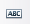 | Camp text: serveix per introduir dades o mostrar dades |
| 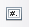 | Camp formatat: és un quadre de text en el qual es defineix el format de les entrades, sortides així com els valors limitadors que les afecten |
| 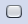 | Botó per prèmer: insereix un botó que en ser premut executa instruccions |
| Botó d’opció: permet a l’usuari escollir d’entre diverses opcions | |
 | Quadre llista: permet seleccionar un element d’una llista |
| 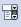 | Quadre combinat: permet seleccionar un element d’una llista o escriure les dades directament |
| 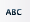 | Camp etiqueta: serveix per mostrar un tex predefinit |
| Assistent: especifica si s’ha d’activar l’assistent a l’inserir un camp de control nou. Ajuda a establir les propietats dels quadres de llista, control de taules i d’altres camps de control | |
| 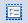 | Quadre de grup: serveix per mostrar un marc per agrupar camps de control. Molt útil per les caselles de verificació o botó d’opció |
| 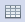 | Control de taula: permet crear un control amb el disseny d’una taula de la base de dades |
| Control de selecció d’arxiu: permet seleccionar un arxiu exterior a la base de dades | |
| Control moneda: permet introduir un camp definit a la base de dades com a monetari | |
| Control calendari: permet introduir un camp a mode de calendari per escollir una data concreta |
Entorn de disseny del formulari: selecció i modificació dels controls
En l’entorn de disseny dels formularis cal seleccionar prèviament els controls abans de fer-hi qualsevol canvi. Tingueu en compte:
- En seleccionar un control es seleccionen automàticament l’etiqueta i el camp.
- Si en seleccionar un control manteniu premuda la tecla Ctrl podreu seleccionar únicament l’etiqueta o únicament el camp.
- La selecció de múltiples controls us permetrà fer-hi canvis de forma simultània.
- Podeu seleccionar més d’un control mantenint premuda la tecla Maj o les tecles Ctrl + Maj i fent clic als diferents controls.
- Si es tracta de controls contigus, també els podeu seleccionar activant el botó Selecciona de la barra d’eines Disseny del formulari, el que té la icona amb la fletxa, i dibuixant un requadre al voltant dels controls que vulgueu seleccionar.
- Seleccioneu diversos controls alhora i utilitzeu les opcions Alineació i Posició i mida del menú contextual o accediu a les propietats des de l’opció Control…, per alinear-los i igualar-ne la mida.
Afegir informació a les taules
La informació que introduireu mitjançant un formulari es reflectirà a la taula d’origen.
Un cop obert el formulari, feu clic al botó corresponent de la barra de navegació i, a continuació, cliqueu dins del camp en el qual voleu introduir les dades.
Per introduir dades en un altre camp podeu tornar a fer clic amb el ratolí sobre un altre camp o prémer la tecla tabulador. A més de la tecla tabulador, disposeu d’altres dreceres de teclat que poden ser útils i que estan recolliden en la taula taula
| Tecla | Acció |
|---|---|
| Fletxa amunt | Si el cursor es troba en un camp numèric augmenta en un la quantitat que el camp contingui. Si el cursor es troba en un camp de text no fa res. |
| Fletxa avall | Si el cursor es troba en un camp numèric disminueix en un la quantitat que el camp contingui. Si el cursor es troba en un camp de text no fa res. |
| Inici | Col·loca el cursor al principi del camp en què es troba. |
| Fi | Col·loca el cursor al final del camp en què es troba. |
| Tabulador o Intro | En prémer aquesta tecla el cursor es col·loca en el camp següent del formulari. Si el cursor es troba en l’últim camp del formulari passa al registre següent. |
| Maj + Tabulador | En prémer aquesta combinació de tecles el cursor es col·loca al camp anterior del formulari. Si el cursor es troba en el primer camp del formulari passa al registre anterior. |
Afegir camps al formulari
Si inicialment el formulari no conté algun camp que es pugui necessitar es pot afegir mitjançant el botó Afegir camp i apareixerà el quadre de diàleg Afegeix camp, tal com podeu veure a la figura, en el qual es mostren tots els camps disponibles a la taula.
- Afegir camp
Si el lloc on ha quedat el camp no és del vostre gust, podeu canviar-ne la posició arrossegant-lo per deixar-lo a la posició definitiva dins del disseny del vostre formulari. Feu-hi clic i moveu-lo amb el ratolí.
Propietats del formulari
És interessant conèixer les propietats del formulari ja que us permetran configurar diversos aspectes del formulari. Per accedir-hi, feu clic amb el botó dret sobre qualsevol camp i seleccioneu Formulari. Observeu que apareix el quadre de diàleg Propietats del formulari, que es mostra a la figura, i que a la primera pestanya, General, al camp Nom hi apareix MainForm.
Aquesta és la manera que té Base d’indicar-nos que està seleccionat el formulari principal.
Mitjançant les opcions de configuració del quadre de diàleg Propietats del formulari podreu modificar algunes de les decisions preses en els passos de l’assistent, quan vau crear el formulari.
De les tres pestanyes disponibles al quadre de diàleg Propietats del formulari prestareu especial atenció a la pestanya Dades que podeu veure a la figura on hi ha les propietats que permeten configurar el comportament del formulari.
Algunes d’aquestes propietats són:
- Tipus de contingut: permet seleccionar l’origen de les dades que mostra el formulari podent triar entre: taula, consulta o expressió SQL.
- Contingut: depenent del que es tingui seleccionat en l’opció anterior, haureu de seleccionar la taula, la consulta o escriure una sentència SQL. És a dir, si decidiu utilitzar una taula, aquí haureu de triar el nom de la taula en qüestió que es desitja utilitzar.
- Filtra: permet establir un filtre associat a les dades que es mostren al formulari. El filtre que establiu s’aplicarà sempre que obriu el formulari.
- Ordena: aquesta propietat permet aplicar un ordre als registres que mostra el formulari.
- Permetre addicions: es pot decidir si utilitzareu el formulari per afegir dades o només per veure els registres.
- Permet les modificacions: igual que en l’opció anterior, però en aquest cas fa referència a la possibilitat de modificar les dades que es mostren en el formulari.
- Permet les supressions: permet controlar des del formulari l’eliminació o no dels registres que es mostren.
- Afegeix només dades: si especifiqueu aquesta propietat a Sí no podreu visualitzar la informació existent en el formulari i només podreu incloure nous registres.
En funció del sistema operatiu amb què treballeu o la versió de LibreOffice que tingueu instal·lada, les icones poden variar una mica.